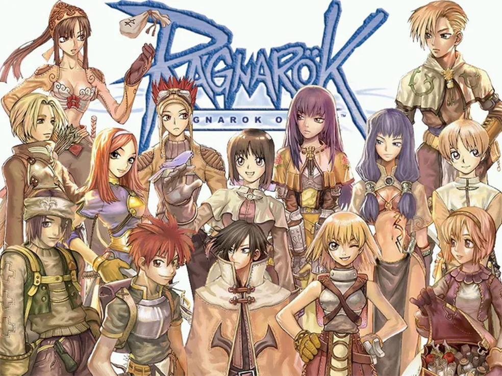
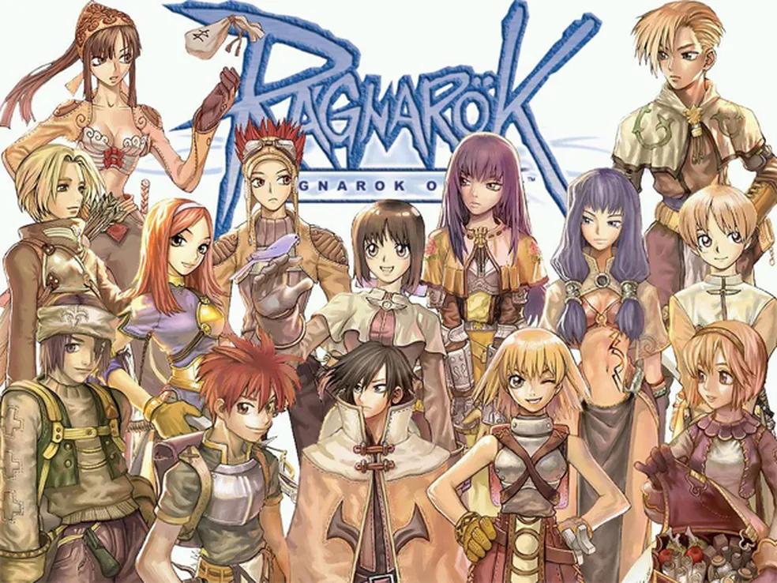

Olá! Neste site você verá 4 jogos online incríveis e divertidos! E ainda por cima, gratuitos :)! Prontos?
Mas primeiro, vamos ver um pouco sobre como os jogos online ficaram tão famosos e populares nos anos 2000 para cá.
🎮 A Evolução dos Jogos Online
Nos anos 2000, os jogos online começaram a se popularizar com games como Counter-Strike 1.6, World of Warcraft e Ragnarök Online. A conexão ainda era limitada, pois muitos jogadores dependiam da internet discada, mas isso não impediu o crescimento de comunidades, clãs e os primeiros campeonatos. A ideia de jogar com pessoas do mundo inteiro em tempo real era algo novo e empolgante, e a tecnologia foi evoluindo rapidamente para tornar isso cada vez mais acessível.
 Counter-Strike 1.6
Counter-Strike 1.6
 World of Warcraft
Ragnarok Online
World of Warcraft
Ragnarok Online
Hoje, os jogos online são muito mais do que entretenimento: são parte da cultura digital, com gráficos de última geração, servidores dedicados, e cenários competitivas gigantescos. Jogos como Fortnite, Rocket League, CS2 e Dota 2 são gratuitos e reúnem milhões de jogadores diariamente, com atualizações constantes e eventos globais. O que antes era um passatempo para poucos, virou um universo completo de possibilidades, diversão e conexão global.
Dito isso, descubra quatro dos jogos gratuitos mais populares e emocionantes do momento! Seja você fã de Battle-Royale, futebol com carros, troca de tiros ou batalhas entre heróis, aqui você encontra tudo o que precisa para mergulhar nessas experiências incríveis, e melhor, sem gastar nada! Explore mais sobre Fortnite, Rocket League, CS2 e Dota 2, e veja onde baixar cada um deles gratuitamente!